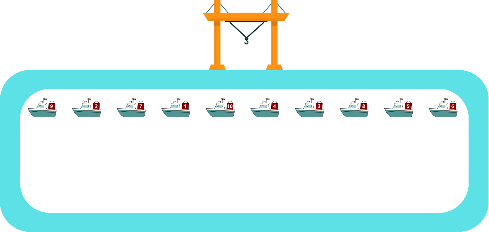
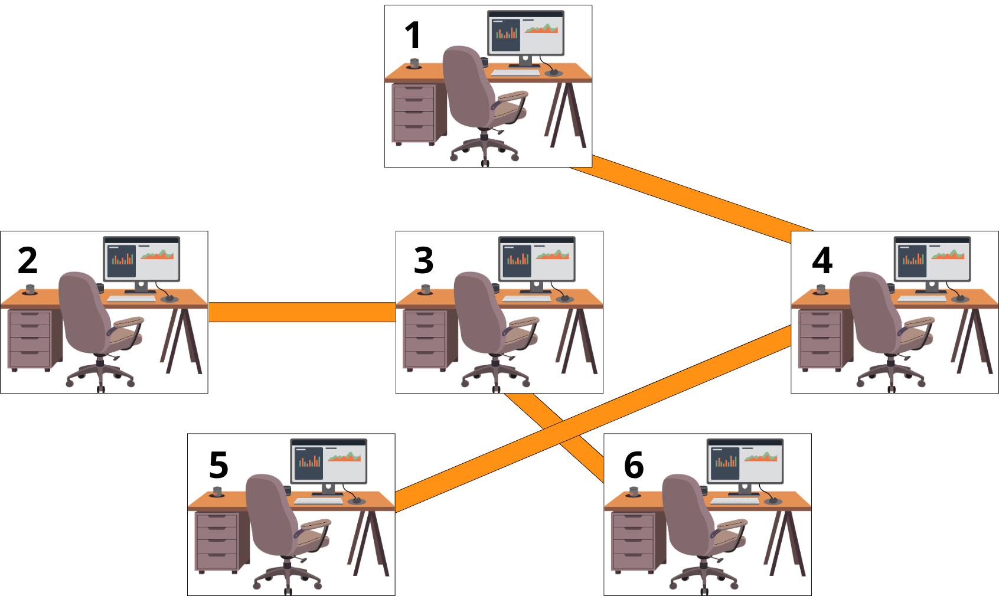
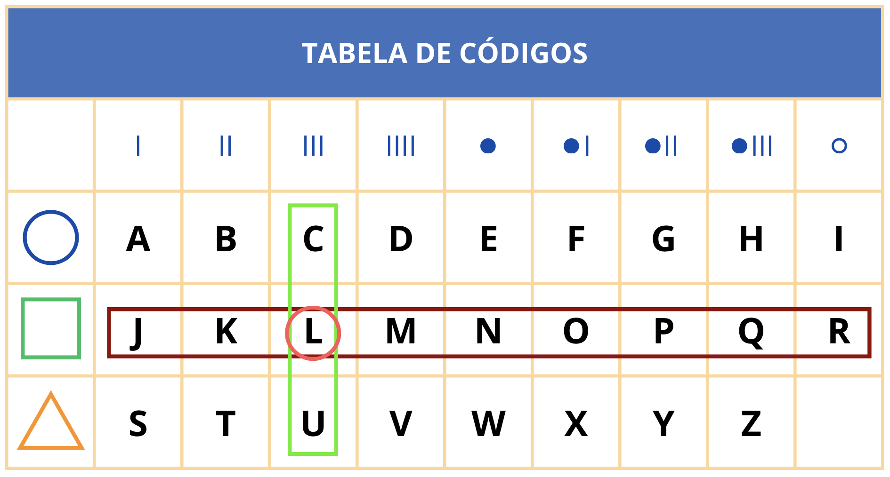
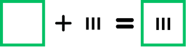
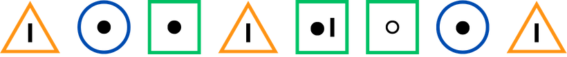
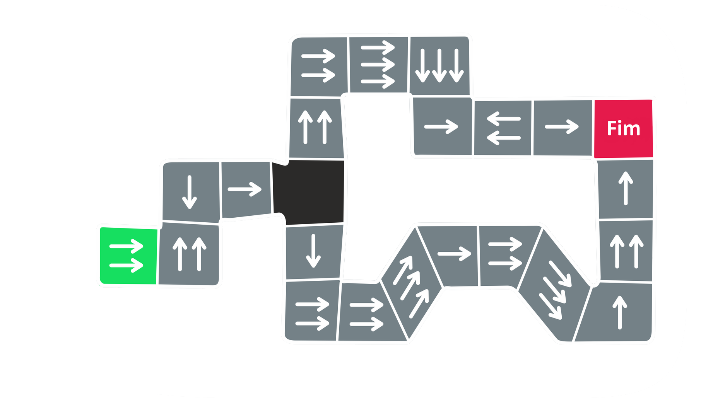
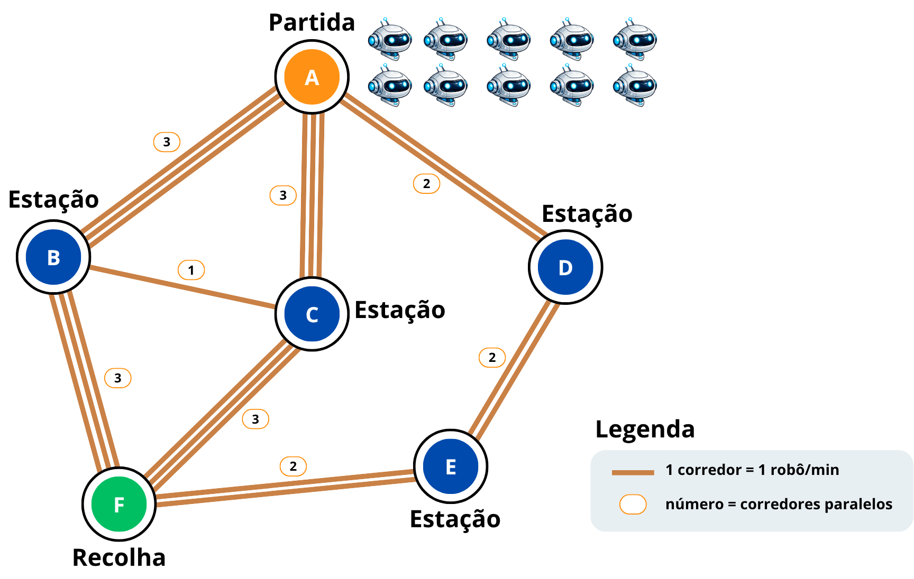
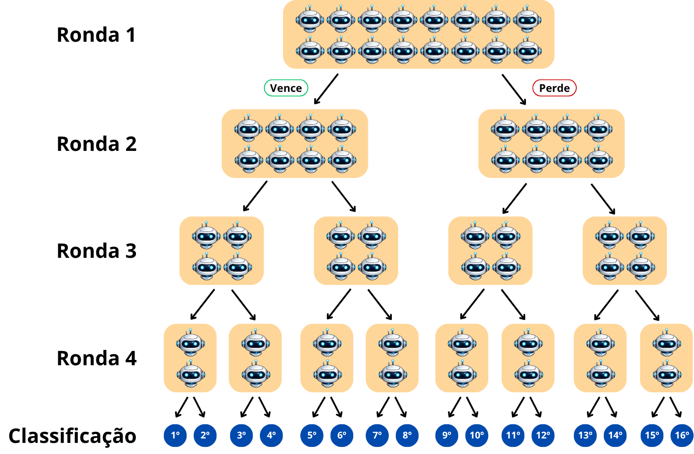

Objetivos do Pré-Teste
- Avaliar a evolução das aprendizagens.
- Verificar a eficácia pedagógica do recurso SmartPark.
- Analisar a motivação e envolvimento dos alunos.
- Identificar dificuldades e sugestões de melhoria.
Identificação do aluno
Instruções:
Lê atentamente cada exercício e responde de acordo com a informação apresentada.
Em cada um dos exercícios, apenas uma resposta está correta.
Exercício 1
Descargas no Porto
Um porto de mercadorias tem vários barcos alinhados num canal de circulação, cada um transportando uma caixa numerada. Um único guindaste portuário descarrega as caixas.
O guindaste está instalado numa posição fixa junto ao cais. Para descarregar uma caixa, o barco que a transporta tem de ficar parado diretamente em frente ao guindaste.
As caixas têm de ser descarregadas por ordem crescente, começando na caixa 1. Os barcos só podem avançar num único sentido, mas o canal forma um circuito fechado, permitindo novas voltas até todas as caixas serem descarregadas.
Exemplo: descargas no porto
Sequência dos barcos: 4 - 1 - 3 - 2
No exemplo acima, as caixas têm de ser descarregadas na sequência 1, 2, 3, 4.
Na primeira volta de descarga, o guindaste ignora o barco com a caixa 4, descarrega a caixa 1, ignora o barco com a caixa 3 e descarrega a caixa 2.
Na segunda volta, ignora novamente o barco com a caixa 4 e descarrega a caixa 3.
Os barcos têm de dar ainda uma terceira volta para que o guindaste possa descarregar a última caixa, a caixa 4.

Pergunta
Quantas voltas serão necessárias para descarregar todas as caixas?
Sequência: 9 - 2 - 7 - 1 - 10 - 4 - 3 - 8 - 5 - 6
Exercício 2
Os Gabinetes do Clube de Robótica
Na escola existe um Clube de Robótica com vários gabinetes numerados. Alguns gabinetes estão ligados por corredores.
Dizemos que duas pessoas são vizinhas de gabinete quando existe um corredor direto entre os gabinetes onde trabalham.
Informação disponível
- A Beatriz tem exatamente 1 vizinho de gabinete.
- A Beatriz é vizinha do Carlos.
- O Carlos trabalha num gabinete com 2 vizinhos.
- A Diana trabalha num gabinete com 1 vizinho.
- O Eduardo trabalha num gabinete que não está ligado ao gabinete da Beatriz.
Observa o mapa dos gabinetes:

Um corredor direto = um vizinho.
1. Quem pode ser vizinho da Beatriz, sabendo que ela só tem 1 vizinho?
2. Se uma pessoa trabalha num gabinete com 2 corredores ligados, quantos vizinhos de gabinete tem essa pessoa?
3. Qual é o gabinete onde pode trabalhar o Carlos?
4. Que gabinetes têm exatamente 1 vizinho?
Exercício 3
A Mensagem do Arquivo Digital
Durante a preparação de uma exposição sobre tecnologia, uma turma encontrou uma tabela de códigos usada para esconder pequenas mensagens. Cada letra é obtida combinando dois elementos: o símbolo da linha e o sinal da coluna correspondente.
Código de arquivo digital

Como funciona?
Cada símbolo codificado junta uma forma da linha com um sinal da coluna correspondente.

Mensagem encontrada

Pergunta
Qual é a mensagem que está escondida no arquivo digital?
Exercício 4
Cartões e Envelopes
A Lara trabalha na secretaria de uma escola, onde prepara cartas para enviar aos encarregados de educação. À sua frente passa um tapete rolante com cartões de identificação e envelopes vazios.
Regras de trabalho: retira cada objeto do tapete da esquerda para a direita; quando retira um cartão, coloca-o numa caixa; quando retira um envelope, pega num cartão da caixa e coloca-o dentro do envelope.
Podem acontecer dois problemas: aparecer um envelope sem haver cartão disponível; ou o tapete acabar e sobrarem cartões na caixa.
Processar da esquerda para a direita.
Pergunta
Qual das sequências não causa problemas à Lara?
Exercício 5
O Percurso do Robô
O Rui está a testar um pequeno robô num laboratório de programação. O robô começa na primeira casa, assinalada a verde. Em cada casa, o robô segue sempre a mesma regra: conta o número de setas, avança esse número de casas na direção indicada e repete o processo a partir da nova casa.
Uma das casas do percurso está vazia. É necessário escolher que setas devem ser desenhadas nessa casa para que o robô chegue à casa final.

Pergunta
O que deve ser desenhado na casa vazia para o robô conseguir chegar ao fim?
Exercício 6
Entregas no Festival
Num festival de tecnologia, há 10 pequenos robôs de entrega na estação A.
Todos precisam de levar encomendas até à estação F, onde fica o ponto de recolha.
As estações estão ligadas por corredores estreitos. Em cada corredor só pode passar um robô de cada vez.
Cada robô demora 1 minuto a deslocar-se de uma estação para outra.
Observa o mapa:

Informação do mapa:
| A está ligada a B por 3 corredores. | B está ligada a C por 1 corredor. |
| A está ligada a C por 3 corredores. | C está ligada a F por 3 corredores. |
| A está ligada a D por 2 corredores. | D está ligada a E por 2 corredores. |
| B está ligada a F por 3 corredores. | E está ligada a F por 2 corredores. |
Pergunta
Qual é o número máximo de robôs que consegue chegar à estação F ao fim de 3 minutos?
robôs
Exercício 7
RoboLiga
Hoje é o torneio anual de RoboLiga. Dezasseis mini-robôs chegaram para competir em quatro rondas, com o objetivo de determinar a classificação geral do 1.º ao 16.º lugar.
Todos os mini-robôs competem juntos na ronda 1. Depois de cada ronda, os concorrentes separam-se: os que vencem seguem pelo ramo da esquerda, enquanto os que perdem seguem pelo ramo da direita, até chegarem à classificação final.

Pergunta
O mini-robô da Mariana perdeu exatamente duas rondas e venceu as outras duas. Em qual dos seguintes lugares ele não pode ter ficado?